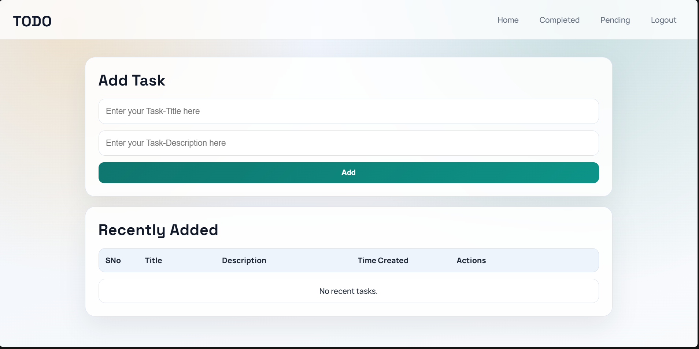
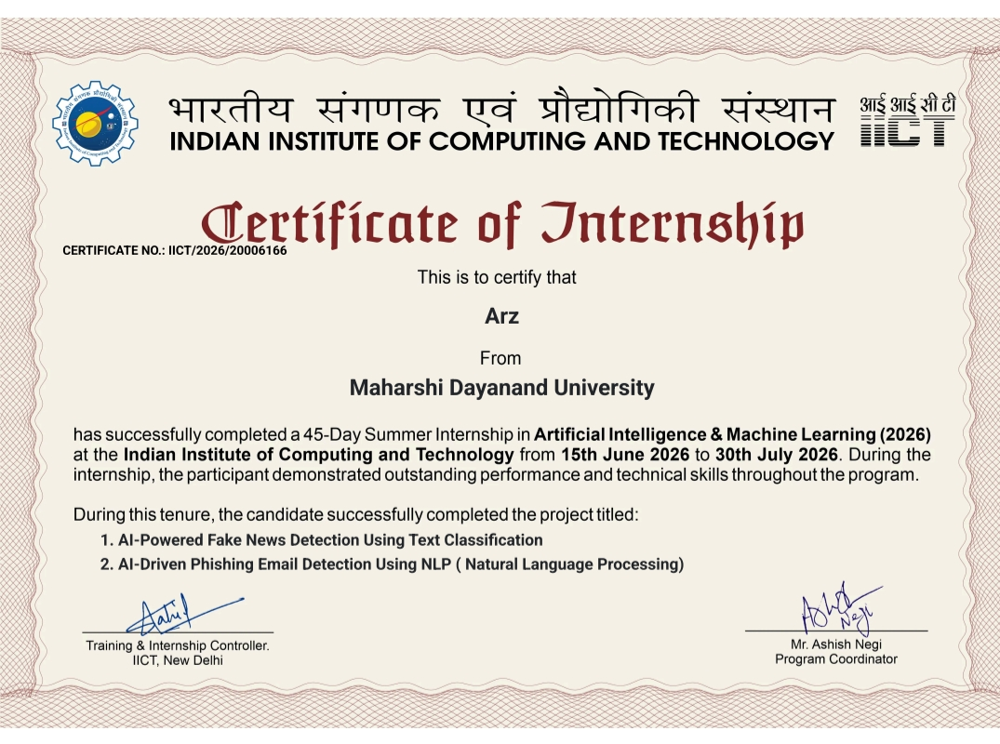
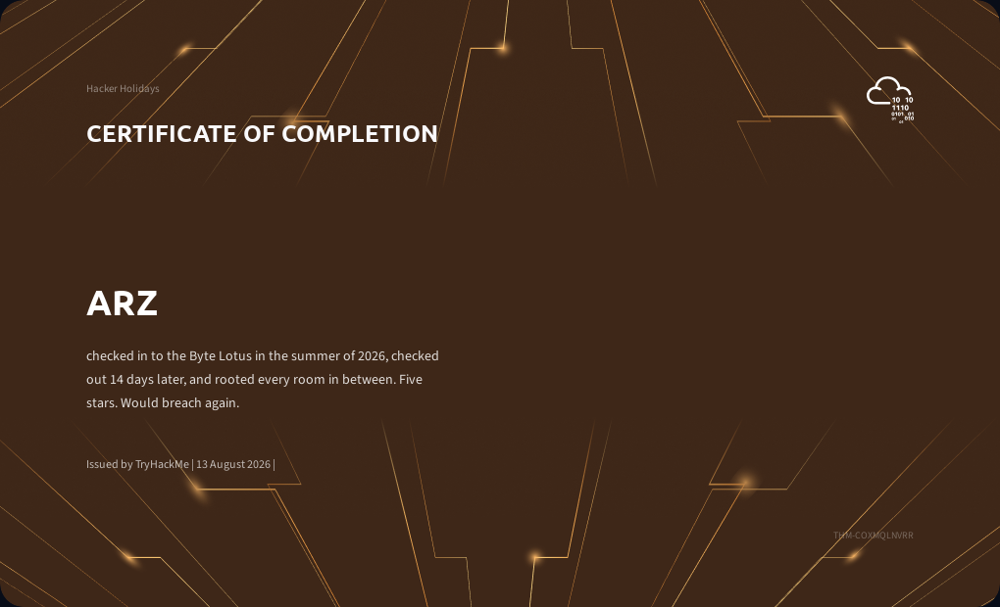

Programming
- Python
- JavaScript
- HTML5
- CSS3
Open to internships and projects
I enjoy building web applications, understanding security weaknesses, working with Linux and networking fundamentals, and turning learning into practical, hands-on projects.
About
I am developing my skills in Python, Flask, HTML, CSS, JavaScript, Linux, networking, and cybersecurity fundamentals. My interest lies in understanding how web applications work, where weaknesses appear, and how to build more secure systems.
I enjoy practical problem-solving, self-directed learning, and turning concepts into working projects. My goal is to improve my technical foundation while continuing to grow in application security, ethical hacking, and responsible development practices.
Skills
Projects
A responsive portfolio website designed to present my learning journey, technical skills, projects, and cybersecurity-focused interests.

A task-tracking web app built with Flask that includes authentication, task management, and separate pending/completed flows.

A browser-based password analyzer focused on human-created patterns such as sequential numbers, common words, repeated characters, and predictable years.
Case Studies
Overview: A practical Flask application for tracking tasks across personal work and study routines.
Problem and objective: Create a simple but reliable system to manage tasks with login protection and separate pending/completed flows.
Implementation: Built with Flask and SQLAlchemy, with user accounts, hashed passwords, session-based authentication, and persistent task management.
Actual features: Registration, login, add/update/complete/delete task actions, and health check route.
Learning outcome: Strengthened understanding of authentication patterns, data persistence, and web app deployment.
Overview: A lightweight security awareness tool designed to analyze patterns people commonly use in passwords.
Problem and objective: Move beyond basic length and symbol checks and focus on realistic human behavior patterns that make passwords predictable.
Implementation: Built in HTML, CSS, and JavaScript with a pattern detection engine and scoring flow in the browser.
Actual features: Sequential numbers, common words, repeated characters, predictable years, real-time scoring, strength feedback, and suggestions.
Limitation: It is an educational analysis tool and does not guarantee a password is secure; it highlights patterns and encourages better password habits.
Certifications

Issued by IICT
Completion certificate for internship work in AI and machine learning learning pathways.
View certificate
Issued by TryHackMe
Completion badge for the Hacker Holiday challenge path, reflecting hands-on cybersecurity learning.
View certificateCybersecurity Practice
My practice is grounded in the areas I am actively studying: Python web applications, Linux environments, reconnaissance and enumeration, vulnerability awareness, and ethical hacking fundamentals. I am building experience through practical challenges and project work, especially in areas related to web application security and responsible testing methods.
Contact